vignettes/articles/check_rcartocolor.Rmd
check_rcartocolor.Rmd
display_carto_all(type = "quantitative")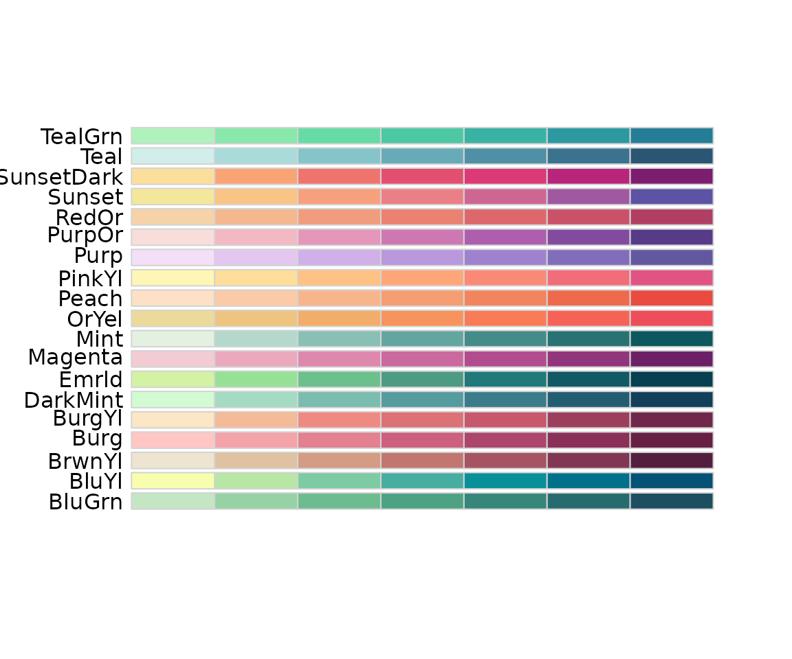
TealGrn = carto_pal(7, "TealGrn")
colorblindcheck::palette_check(TealGrn, plot = TRUE)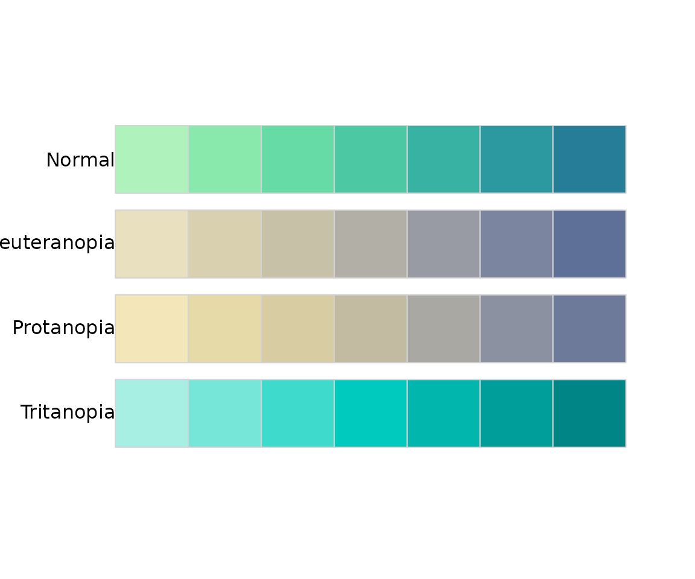
#> name n tolerance ncp ndcp min_dist mean_dist max_dist
#> 1 normal 7 4.525989 21 21 4.525989 20.41736 43.86276
#> 2 deuteranopia 7 4.525989 21 19 3.678936 21.46518 45.56837
#> 3 protanopia 7 4.525989 21 19 3.011912 20.41439 43.70189
#> 4 tritanopia 7 4.525989 21 19 4.490613 14.35030 31.12904
Teal = carto_pal(7, "Teal")
colorblindcheck::palette_check(Teal, plot = TRUE)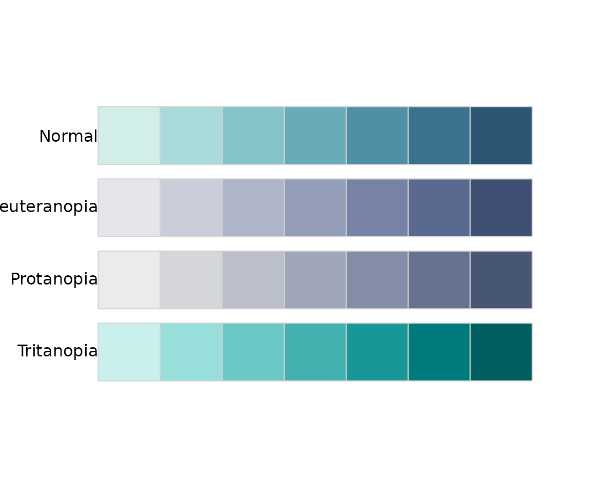
#> name n tolerance ncp ndcp min_dist mean_dist max_dist
#> 1 normal 7 6.862176 21 21 6.862176 23.00297 50.28819
#> 2 deuteranopia 7 6.862176 21 20 6.586668 22.69854 50.82805
#> 3 protanopia 7 6.862176 21 19 5.115249 21.91917 48.71779
#> 4 tritanopia 7 6.862176 21 20 6.680020 21.77377 47.95321
SunsetDark = carto_pal(7, "SunsetDark")
colorblindcheck::palette_check(SunsetDark, plot = TRUE)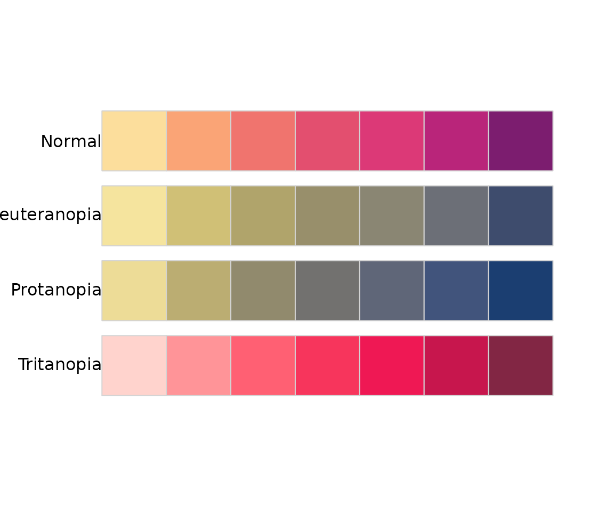
#> name n tolerance ncp ndcp min_dist mean_dist max_dist
#> 1 normal 7 6.671338 21 21 6.671338 31.85827 71.68336
#> 2 deuteranopia 7 6.671338 21 20 6.529856 26.89899 62.60736
#> 3 protanopia 7 6.671338 21 21 8.092279 31.50976 71.15744
#> 4 tritanopia 7 6.671338 21 20 3.751602 22.68229 52.68331
Sunset = carto_pal(7, "Sunset")
colorblindcheck::palette_check(Sunset, plot = TRUE)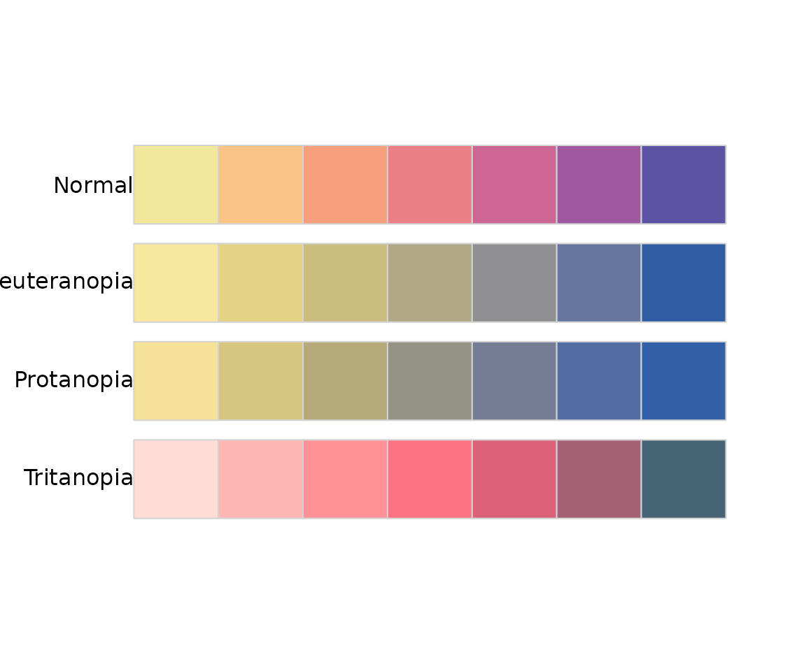
#> name n tolerance ncp ndcp min_dist mean_dist max_dist
#> 1 normal 7 13.55652 21 21 13.556520 35.18554 67.75598
#> 2 deuteranopia 7 13.55652 21 16 4.817718 30.41789 64.35937
#> 3 protanopia 7 13.55652 21 16 6.197629 30.99078 62.74440
#> 4 tritanopia 7 13.55652 21 15 6.548290 25.97751 49.36367
RedOr = carto_pal(7, "RedOr")
colorblindcheck::palette_check(RedOr, plot = TRUE)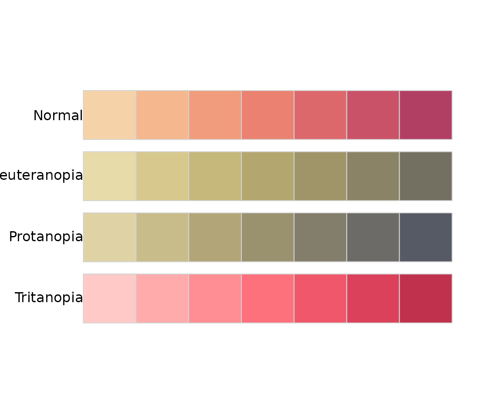
#> name n tolerance ncp ndcp min_dist mean_dist max_dist
#> 1 normal 7 8.223173 21 21 8.223173 21.81904 46.51079
#> 2 deuteranopia 7 8.223173 21 16 4.430089 15.31267 33.43432
#> 3 protanopia 7 8.223173 21 18 5.844756 21.05581 45.99601
#> 4 tritanopia 7 8.223173 21 15 5.965075 16.97291 37.03430
PurpOr = carto_pal(7, "PurpOr")
colorblindcheck::palette_check(PurpOr, plot = TRUE)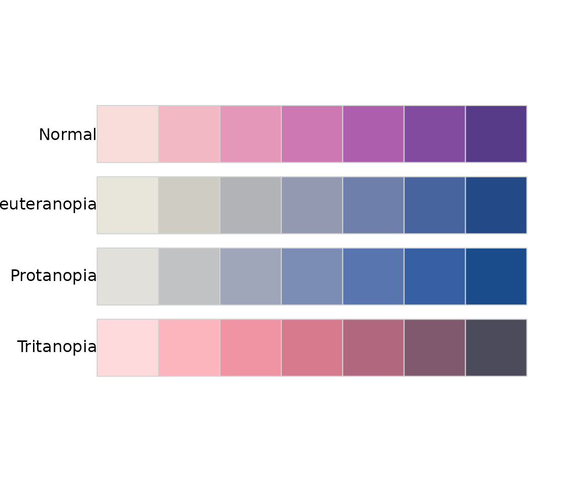
#> name n tolerance ncp ndcp min_dist mean_dist max_dist
#> 1 normal 7 9.80217 21 21 9.802170 26.51601 56.36869
#> 2 deuteranopia 7 9.80217 21 18 5.842245 26.86104 58.02712
#> 3 protanopia 7 9.80217 21 17 7.408276 25.41084 55.90280
#> 4 tritanopia 7 9.80217 21 18 7.535735 24.80570 51.50918
Purp = carto_pal(7, "Purp")
colorblindcheck::palette_check(Purp, plot = TRUE)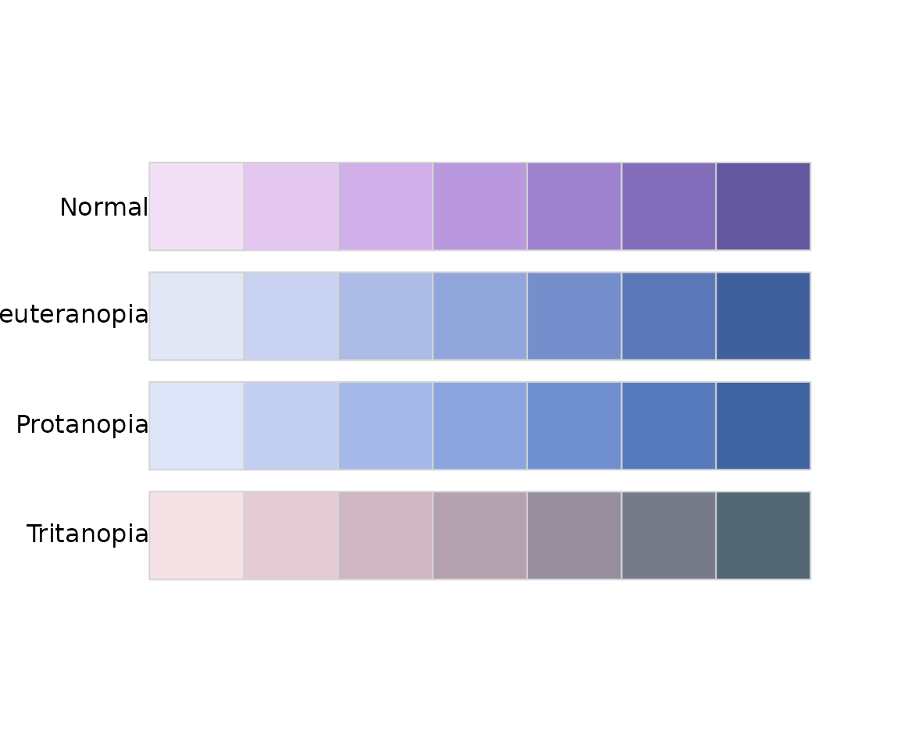
#> name n tolerance ncp ndcp min_dist mean_dist max_dist
#> 1 normal 7 6.622445 21 21 6.622445 19.66350 42.97008
#> 2 deuteranopia 7 6.622445 21 20 6.552324 19.64883 43.34512
#> 3 protanopia 7 6.622445 21 19 6.375359 18.72890 41.40263
#> 4 tritanopia 7 6.622445 21 18 5.440534 19.94127 43.22955
PinkYl = carto_pal(7, "PinkYl")
colorblindcheck::palette_check(PinkYl, plot = TRUE)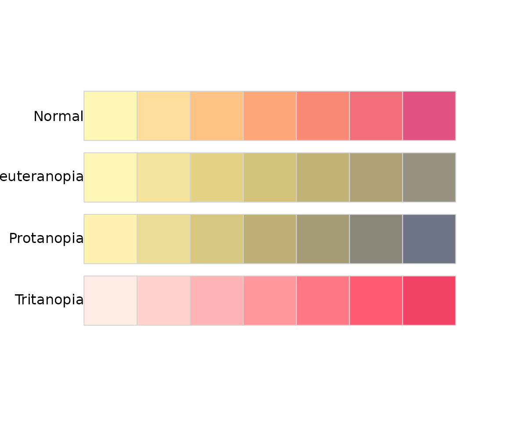
#> name n tolerance ncp ndcp min_dist mean_dist max_dist
#> 1 normal 7 8.848948 21 21 8.848948 26.35793 55.69140
#> 2 deuteranopia 7 8.848948 21 13 3.949366 13.35798 28.45087
#> 3 protanopia 7 8.848948 21 17 4.976601 20.65887 45.56306
#> 4 tritanopia 7 8.848948 21 16 5.085890 17.79717 37.74187
Peach = carto_pal(7, "Peach")
colorblindcheck::palette_check(Peach, plot = TRUE)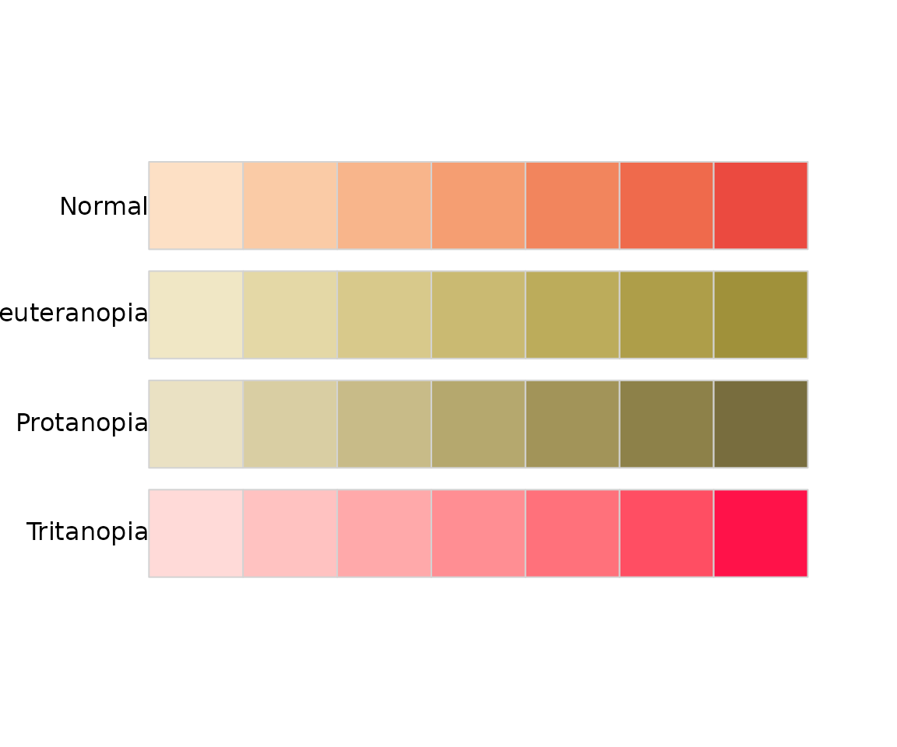
#> name n tolerance ncp ndcp min_dist mean_dist max_dist
#> 1 normal 7 6.16765 21 21 6.167650 16.86487 36.14542
#> 2 deuteranopia 7 6.16765 21 15 4.245641 11.71132 25.83392
#> 3 protanopia 7 6.16765 21 17 5.268062 16.00891 35.09700
#> 4 tritanopia 7 6.16765 21 18 6.019857 16.27539 35.20418
OrYel = carto_pal(7, "OrYel")
colorblindcheck::palette_check(OrYel, plot = TRUE)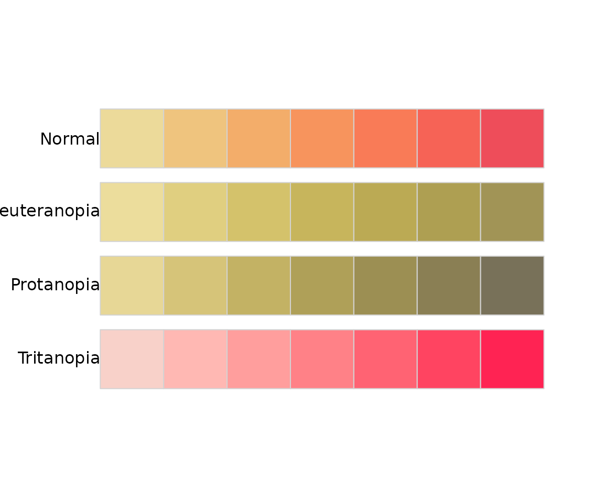
#> name n tolerance ncp ndcp min_dist mean_dist max_dist
#> 1 normal 7 7.124452 21 21 7.124452 21.637876 45.72253
#> 2 deuteranopia 7 7.124452 21 12 3.128252 9.203966 19.66362
#> 3 protanopia 7 7.124452 21 16 4.875324 15.048204 32.20346
#> 4 tritanopia 7 7.124452 21 16 3.463169 15.280775 32.72327
Mint = carto_pal(7, "Mint")
colorblindcheck::palette_check(Mint, plot = TRUE)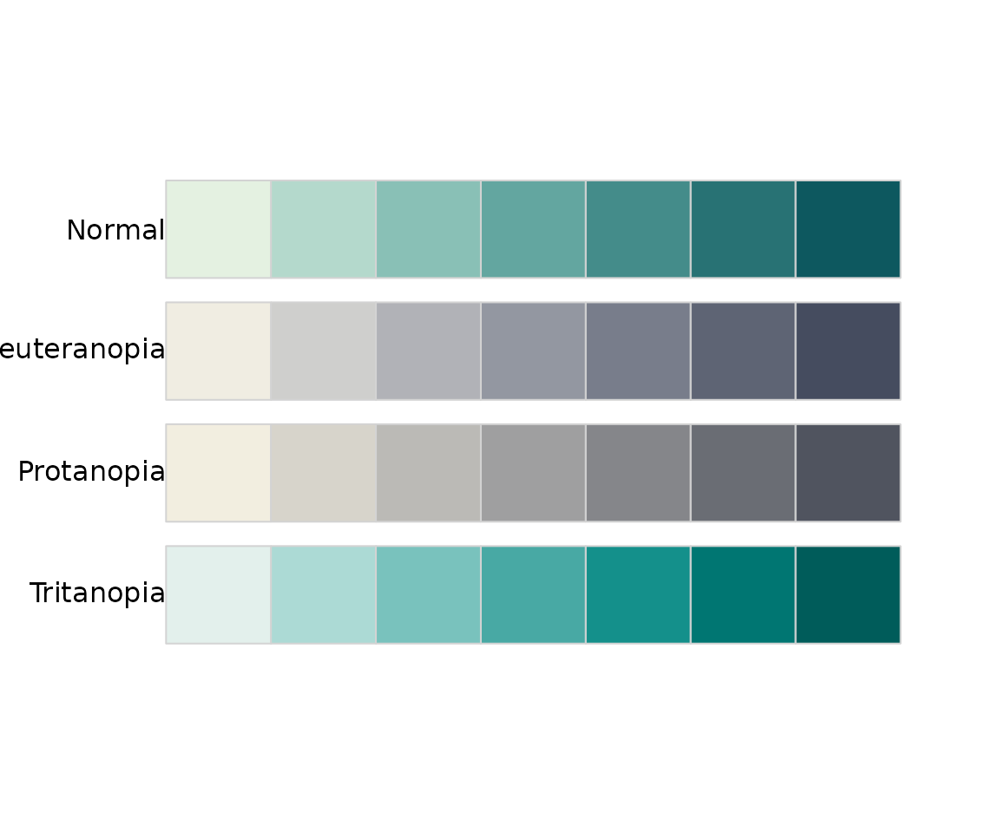
#> name n tolerance ncp ndcp min_dist mean_dist max_dist
#> 1 normal 7 8.183972 21 21 8.183972 23.74098 52.40978
#> 2 deuteranopia 7 8.183972 21 20 7.918225 23.97997 54.02411
#> 3 protanopia 7 8.183972 21 18 6.090769 22.20069 49.80076
#> 4 tritanopia 7 8.183972 21 21 8.334030 23.52143 50.98059
Magenta = carto_pal(7, "Magenta")
colorblindcheck::palette_check(Magenta, plot = TRUE)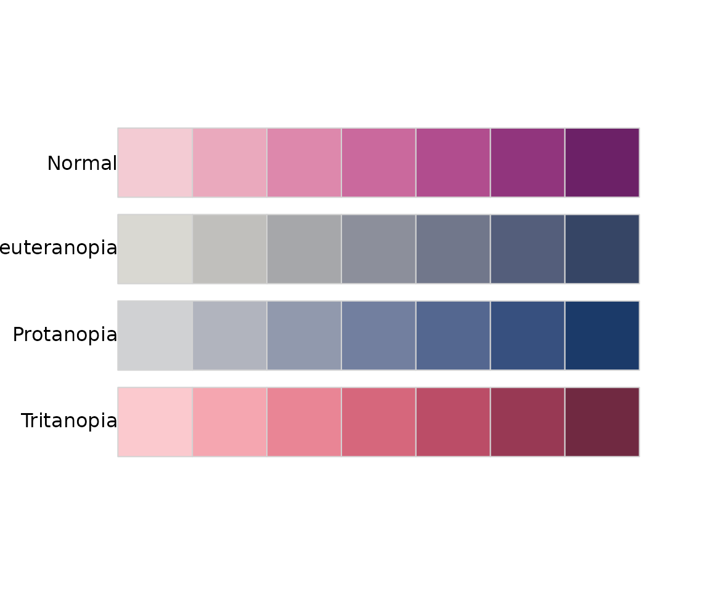
#> name n tolerance ncp ndcp min_dist mean_dist max_dist
#> 1 normal 7 8.634503 21 21 8.634503 24.48868 56.17640
#> 2 deuteranopia 7 8.634503 21 19 6.240005 23.83291 54.77806
#> 3 protanopia 7 8.634503 21 18 7.367580 25.13488 59.43953
#> 4 tritanopia 7 8.634503 21 19 7.951172 23.44744 53.69520
Emrld = carto_pal(7, "Emrld")
colorblindcheck::palette_check(Emrld, plot = TRUE)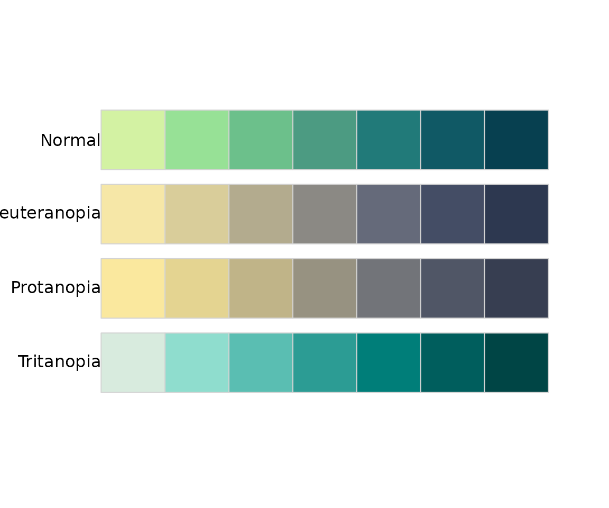
#> name n tolerance ncp ndcp min_dist mean_dist max_dist
#> 1 normal 7 8.861165 21 21 8.861165 31.95098 68.80566
#> 2 deuteranopia 7 8.861165 21 19 6.503686 32.48570 70.48066
#> 3 protanopia 7 8.861165 21 19 4.667245 31.24464 67.05621
#> 4 tritanopia 7 8.861165 21 20 8.081308 27.48230 59.77307
DarkMint = carto_pal(7, "DarkMint")
colorblindcheck::palette_check(DarkMint, plot = TRUE)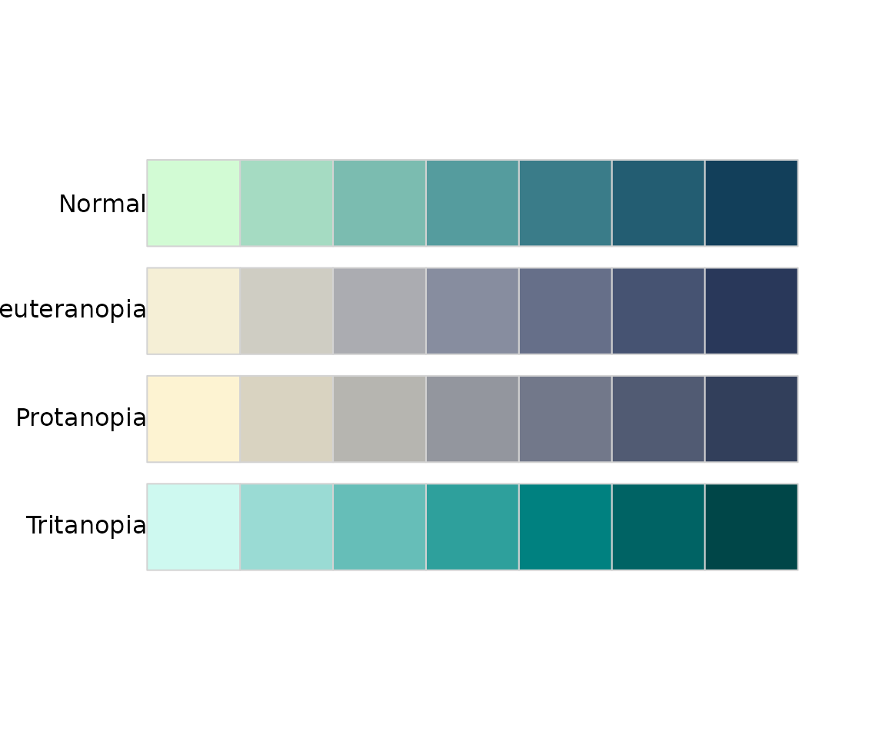
#> name n tolerance ncp ndcp min_dist mean_dist max_dist
#> 1 normal 7 9.080145 21 21 9.080145 29.83704 67.63179
#> 2 deuteranopia 7 9.080145 21 20 9.076035 30.00635 68.69055
#> 3 protanopia 7 9.080145 21 20 8.478984 29.20026 65.84099
#> 4 tritanopia 7 9.080145 21 19 8.670233 26.58184 60.00357
BurgYl = carto_pal(7, "BurgYl")
colorblindcheck::palette_check(BurgYl, plot = TRUE)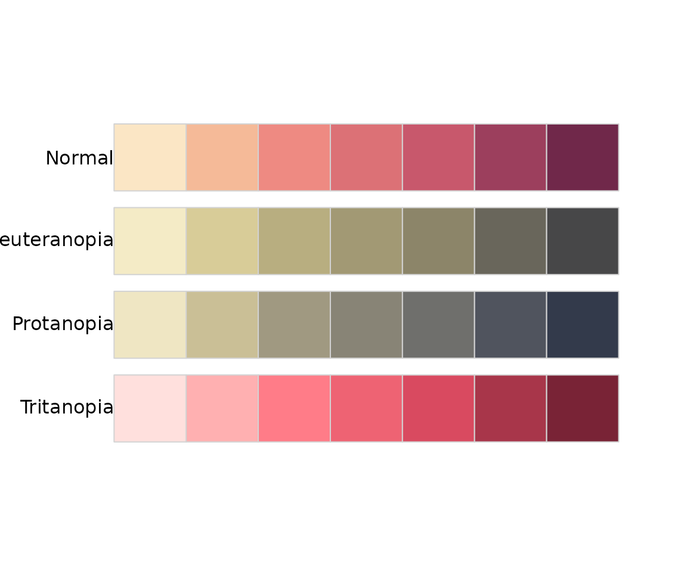
#> name n tolerance ncp ndcp min_dist mean_dist max_dist
#> 1 normal 7 7.593621 21 21 7.593621 28.83648 64.07379
#> 2 deuteranopia 7 7.593621 21 19 6.601211 24.18231 55.87988
#> 3 protanopia 7 7.593621 21 21 8.090984 27.71622 65.09348
#> 4 tritanopia 7 7.593621 21 19 6.308693 25.28367 57.67424
Burg = carto_pal(7, "Burg")
colorblindcheck::palette_check(Burg, plot = TRUE)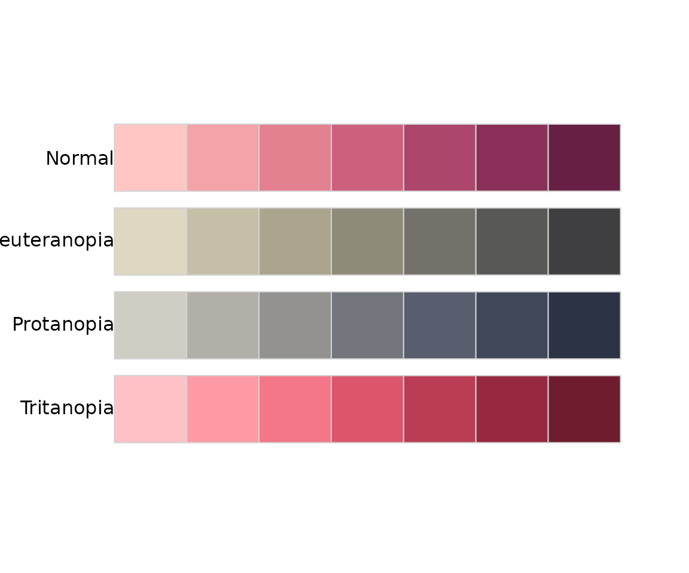
#> name n tolerance ncp ndcp min_dist mean_dist max_dist
#> 1 normal 7 8.15224 21 21 8.152240 25.13510 58.32481
#> 2 deuteranopia 7 8.15224 21 19 6.282657 24.25541 56.24346
#> 3 protanopia 7 8.15224 21 19 6.549891 25.87252 62.30903
#> 4 tritanopia 7 8.15224 21 21 8.217553 24.37281 56.35172
BrwnYl = carto_pal(7, "BrwnYl")
colorblindcheck::palette_check(BrwnYl, plot = TRUE)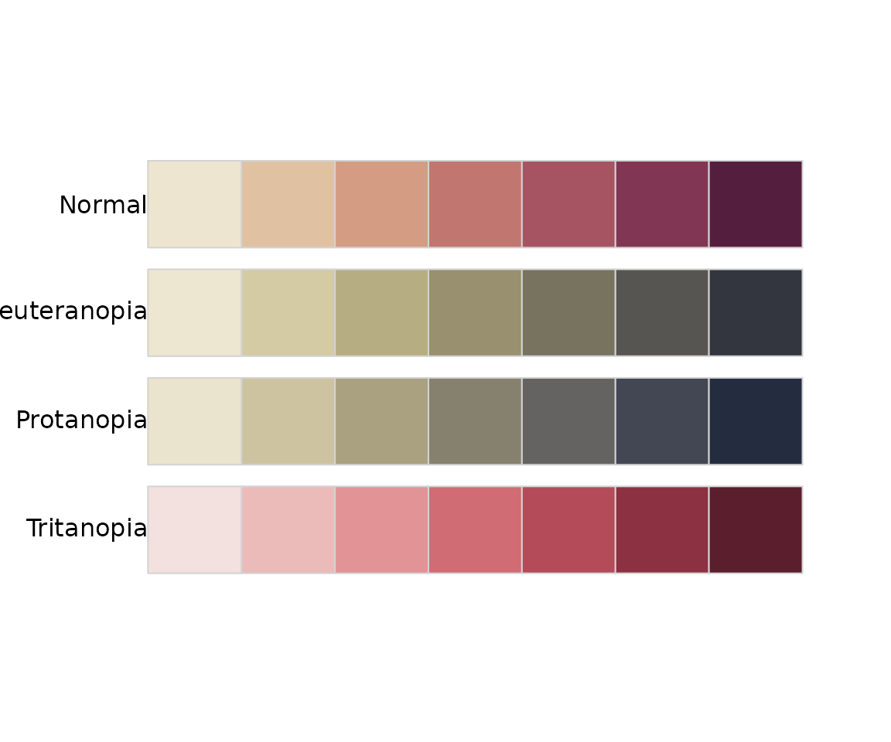
#> name n tolerance ncp ndcp min_dist mean_dist max_dist
#> 1 normal 7 11.09279 21 21 11.092795 32.40575 71.82486
#> 2 deuteranopia 7 11.09279 21 18 7.770323 28.25186 64.83553
#> 3 protanopia 7 11.09279 21 18 8.918230 31.09327 71.87131
#> 4 tritanopia 7 11.09279 21 17 10.452544 28.96021 66.83156
BluYl = carto_pal(7, "BluYl")
colorblindcheck::palette_check(BluYl, plot = TRUE)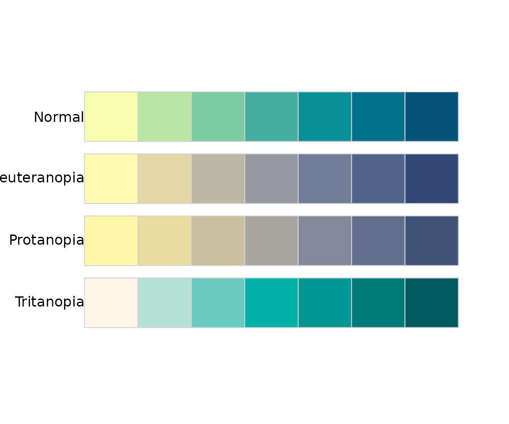
#> name n tolerance ncp ndcp min_dist mean_dist max_dist
#> 1 normal 7 11.39398 21 21 11.393982 31.96155 68.18041
#> 2 deuteranopia 7 11.39398 21 17 8.779715 32.49931 70.54182
#> 3 protanopia 7 11.39398 21 18 6.842825 30.33416 65.82140
#> 4 tritanopia 7 11.39398 21 16 8.365870 26.24824 55.78708
BluGrn = carto_pal(7, "BluGrn")
colorblindcheck::palette_check(BluGrn, plot = TRUE)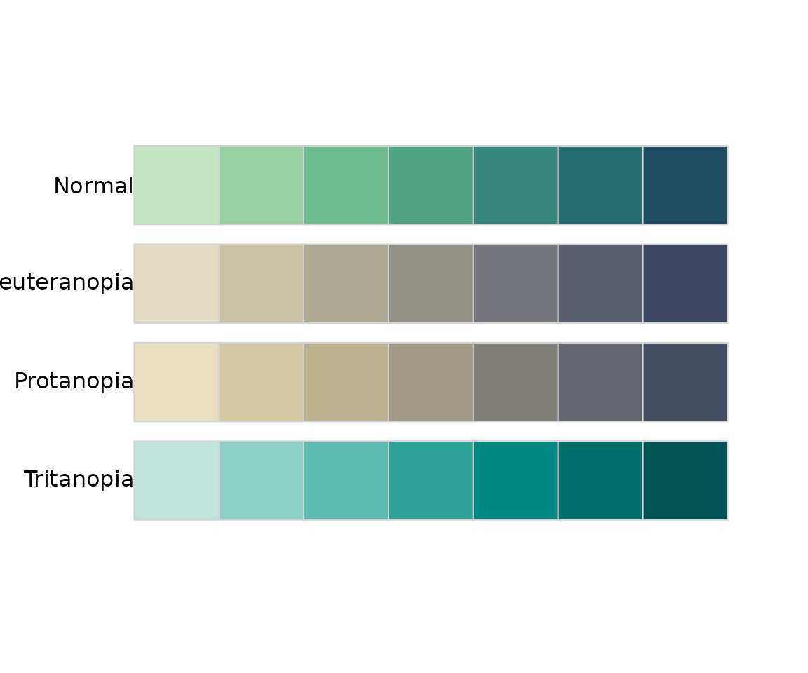
#> name n tolerance ncp ndcp min_dist mean_dist max_dist
#> 1 normal 7 7.171832 21 21 7.171832 25.39330 55.01384
#> 2 deuteranopia 7 7.171832 21 19 6.543992 25.68916 56.90337
#> 3 protanopia 7 7.171832 21 19 6.098638 24.69452 54.01651
#> 4 tritanopia 7 7.171832 21 21 7.436599 22.53958 50.01628
display_carto_all(type = "diverging")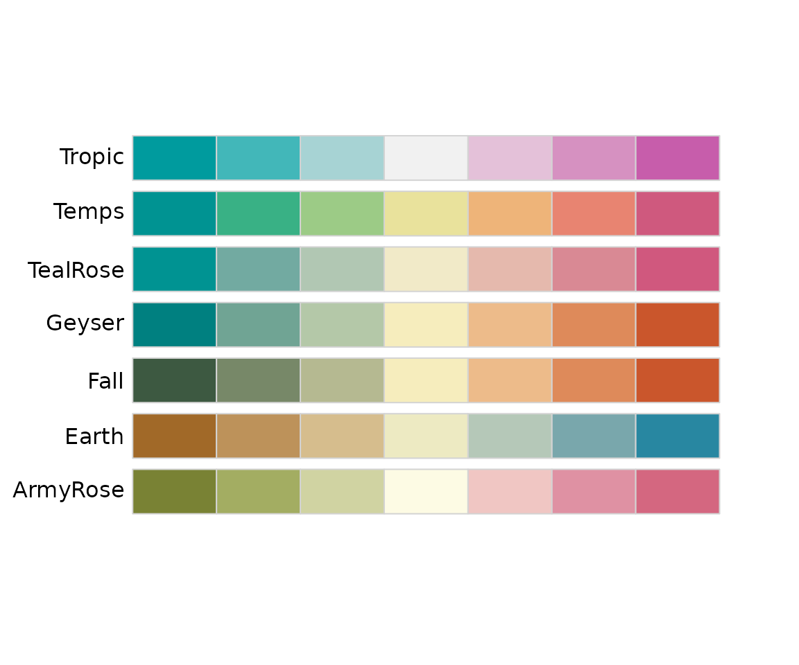
Earth = carto_pal(7, "Earth")
colorblindcheck::palette_check(Earth, plot = TRUE)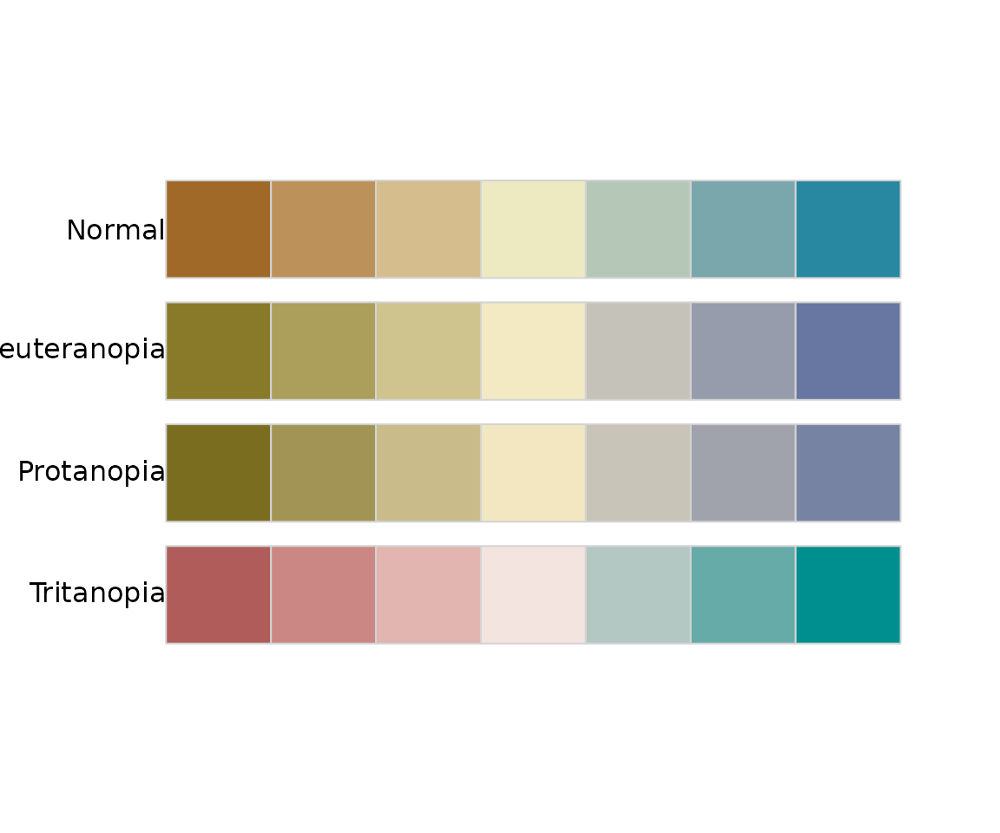
#> name n tolerance ncp ndcp min_dist mean_dist max_dist
#> 1 normal 7 12.5245 21 21 12.524500 27.12465 42.52298
#> 2 deuteranopia 7 12.5245 21 19 9.836314 26.00989 45.67681
#> 3 protanopia 7 12.5245 21 17 10.737623 24.63111 40.05255
#> 4 tritanopia 7 12.5245 21 20 11.551740 30.63456 48.25222
ArmyRose = carto_pal(7, "ArmyRose")
colorblindcheck::palette_check(ArmyRose, plot = TRUE)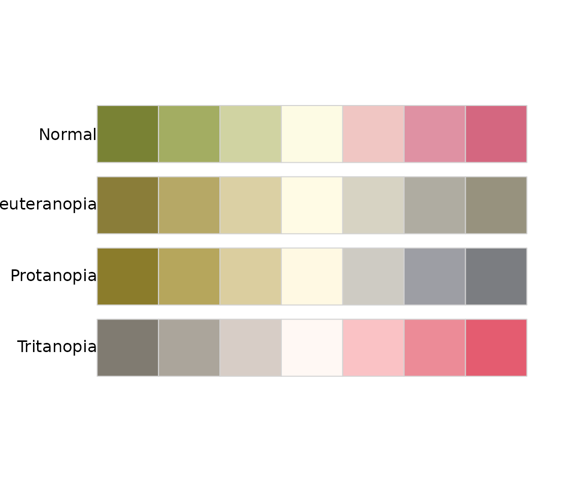
#> name n tolerance ncp ndcp min_dist mean_dist max_dist
#> 1 normal 7 10.75289 21 21 10.752894 31.11200 49.52187
#> 2 deuteranopia 7 10.75289 21 17 8.752870 17.58832 35.99437
#> 3 protanopia 7 10.75289 21 21 11.429036 22.62514 36.69118
#> 4 tritanopia 7 10.75289 21 20 9.519174 23.07556 37.83034
Geyser = carto_pal(7, "Geyser")
colorblindcheck::palette_check(Geyser, plot = TRUE)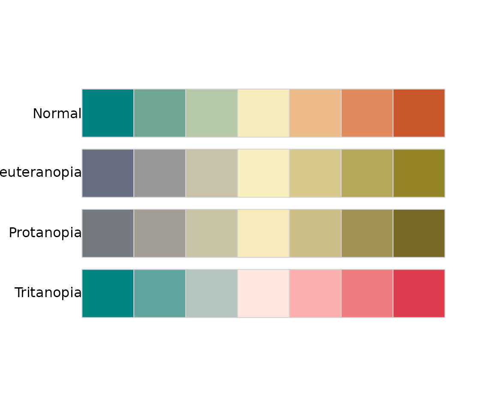
#> name n tolerance ncp ndcp min_dist mean_dist max_dist
#> 1 normal 7 13.88224 21 21 13.882238 30.98809 48.71079
#> 2 deuteranopia 7 13.88224 21 16 9.246076 23.10743 45.43465
#> 3 protanopia 7 13.88224 21 16 7.263361 21.45174 38.13983
#> 4 tritanopia 7 13.88224 21 18 12.624682 34.50760 58.13490
Tropic = carto_pal(7, "Tropic")
colorblindcheck::palette_check(Tropic, plot = TRUE)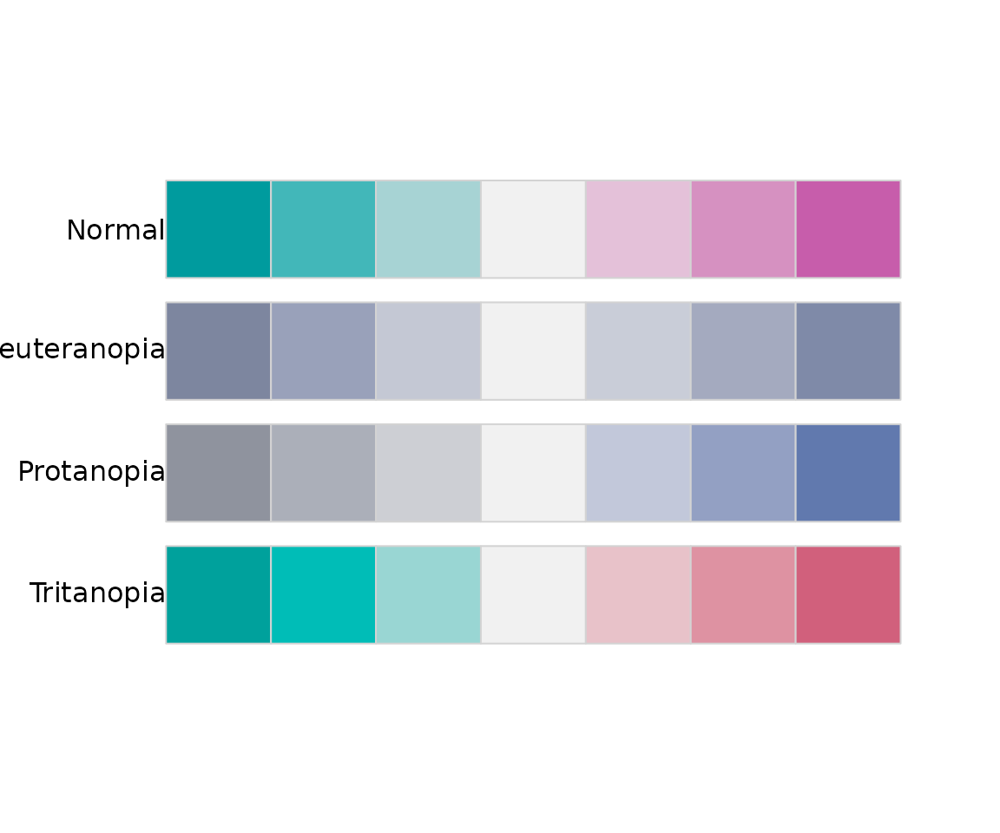
#> name n tolerance ncp ndcp min_dist mean_dist max_dist
#> 1 normal 7 8.818466 21 21 8.818466 30.64224 48.18967
#> 2 deuteranopia 7 8.818466 21 16 1.299920 14.01971 30.50393
#> 3 protanopia 7 8.818466 21 16 5.825911 16.47466 37.82262
#> 4 tritanopia 7 8.818466 21 20 8.078213 35.46264 66.78515
Temps = carto_pal(7, "Temps")
colorblindcheck::palette_check(Temps, plot = TRUE)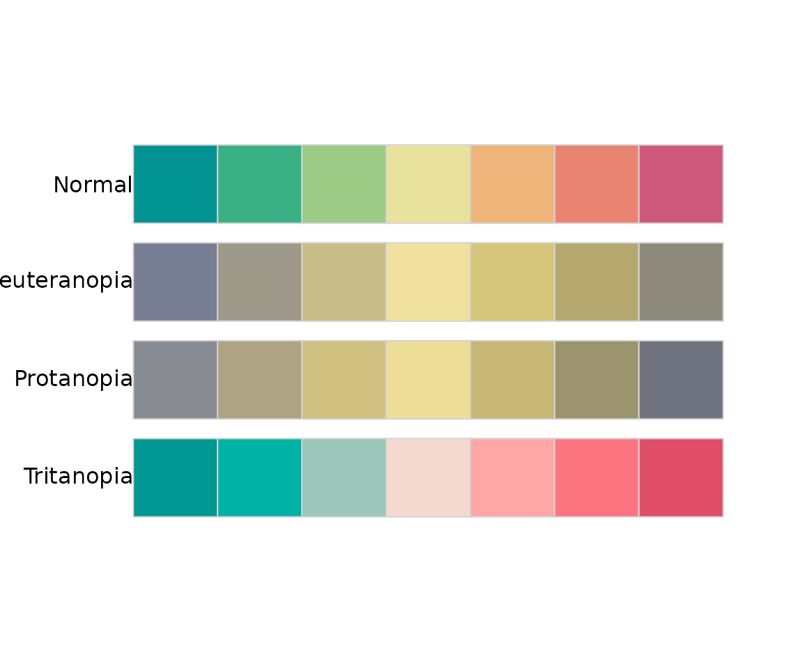
#> name n tolerance ncp ndcp min_dist mean_dist max_dist
#> 1 normal 7 15.00693 21 21 15.006928 37.11484 67.19813
#> 2 deuteranopia 7 15.00693 21 12 5.280416 18.96737 42.01367
#> 3 protanopia 7 15.00693 21 12 2.708943 19.86819 42.73267
#> 4 tritanopia 7 15.00693 21 17 7.815793 36.11531 64.43239
TealRose = carto_pal(7, "TealRose")
colorblindcheck::palette_check(TealRose, plot = TRUE)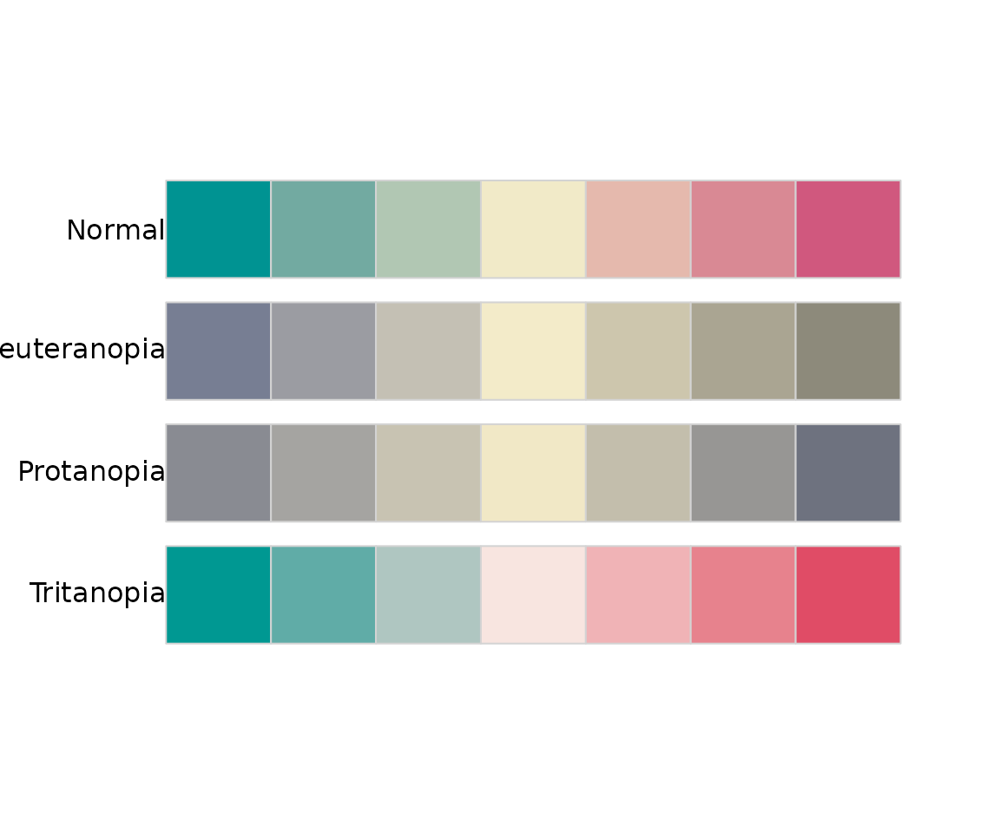
#> name n tolerance ncp ndcp min_dist mean_dist max_dist
#> 1 normal 7 11.77803 21 21 11.778027 32.65683 58.37099
#> 2 deuteranopia 7 11.77803 21 16 5.060102 17.34755 38.50320
#> 3 protanopia 7 11.77803 21 12 1.372032 16.63210 39.68967
#> 4 tritanopia 7 11.77803 21 20 8.874624 33.14922 60.27321
Fall = carto_pal(7, "Fall")
colorblindcheck::palette_check(Fall, plot = TRUE)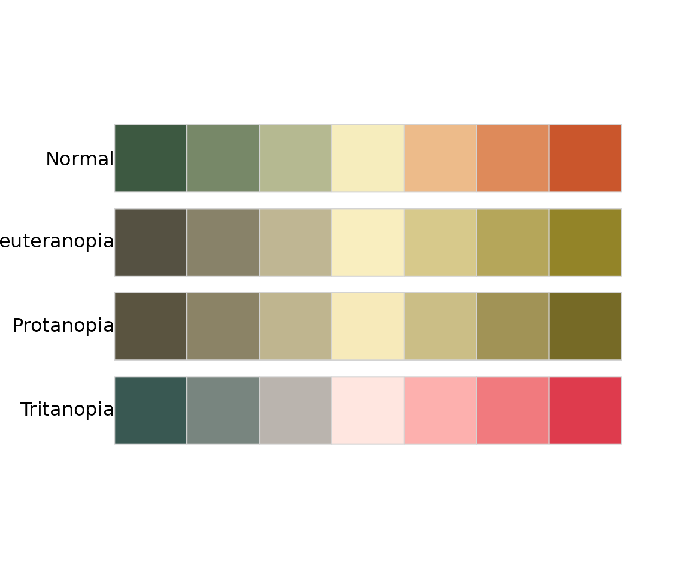
#> name n tolerance ncp ndcp min_dist mean_dist max_dist
#> 1 normal 7 13.76708 21 21 13.767081 30.25280 50.40550
#> 2 deuteranopia 7 13.76708 21 15 8.026617 22.24685 50.19581
#> 3 protanopia 7 13.76708 21 15 4.956151 21.68845 47.76283
#> 4 tritanopia 7 13.76708 21 20 12.624682 31.40722 55.83232
display_carto_all(type = "qualitative")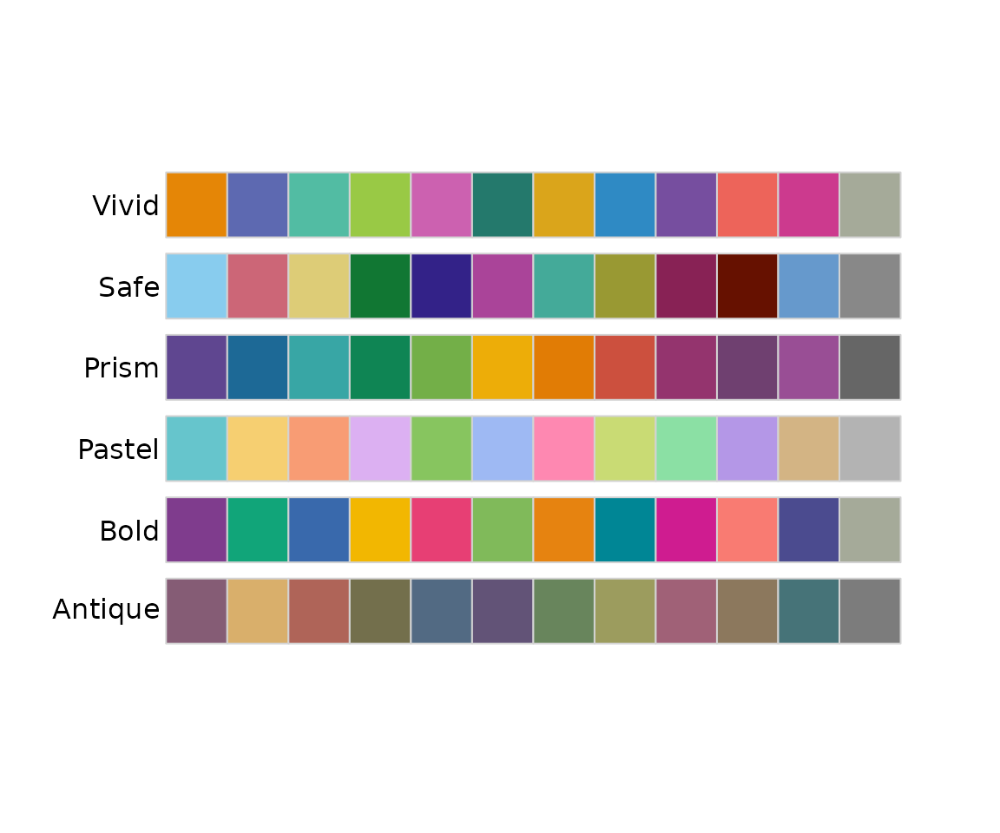
Safe = carto_pal(7, "Safe")
colorblindcheck::palette_check(Safe, plot = TRUE)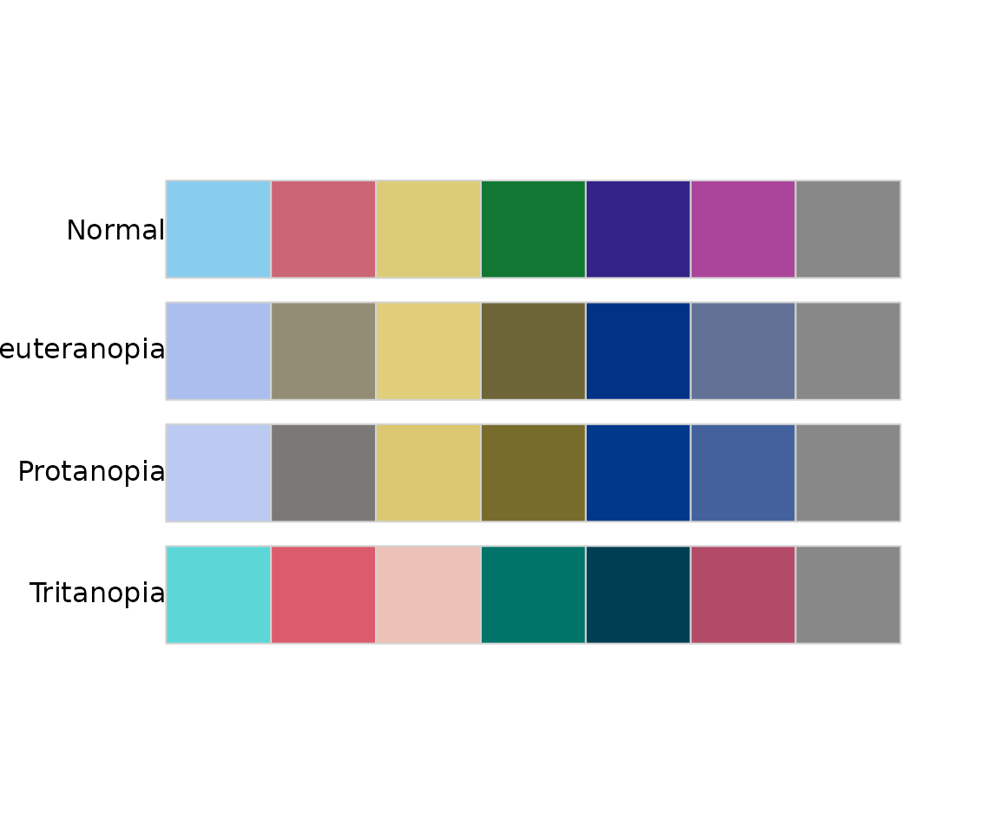
#> name n tolerance ncp ndcp min_dist mean_dist max_dist
#> 1 normal 7 19.81317 21 21 19.813167 44.29825 83.53756
#> 2 deuteranopia 7 19.81317 21 18 10.762263 34.93196 79.44862
#> 3 protanopia 7 19.81317 21 18 5.766448 34.91517 76.03409
#> 4 tritanopia 7 19.81317 21 20 11.649905 40.28392 68.21656
Vivid = carto_pal(7, "Vivid")
colorblindcheck::palette_check(Vivid, plot = TRUE)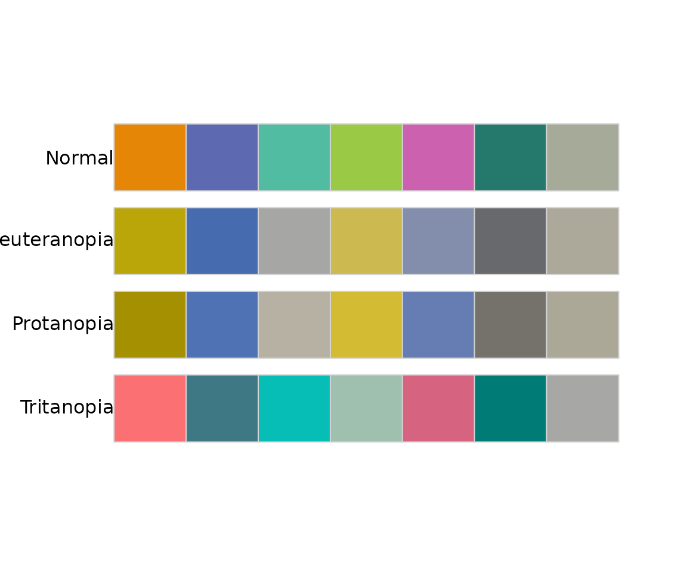
#> name n tolerance ncp ndcp min_dist mean_dist max_dist
#> 1 normal 7 19.09441 21 21 19.094412 38.74835 75.06609
#> 2 deuteranopia 7 19.09441 21 15 6.198432 28.21671 58.54371
#> 3 protanopia 7 19.09441 21 17 2.760351 29.27414 58.65574
#> 4 tritanopia 7 19.09441 21 17 10.561731 34.24638 66.35274
Prism = carto_pal(7, "Prism")
colorblindcheck::palette_check(Prism, plot = TRUE)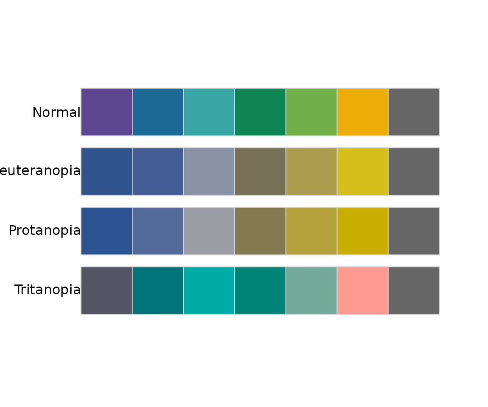
#> name n tolerance ncp ndcp min_dist mean_dist max_dist
#> 1 normal 7 18.70177 21 21 18.701769 36.68691 67.26953
#> 2 deuteranopia 7 18.70177 21 18 4.108265 31.85911 66.56869
#> 3 protanopia 7 18.70177 21 16 6.460115 31.21851 64.38565
#> 4 tritanopia 7 18.70177 21 16 9.007619 29.53662 54.88382
Pastel = carto_pal(7, "Pastel")
colorblindcheck::palette_check(Pastel, plot = TRUE)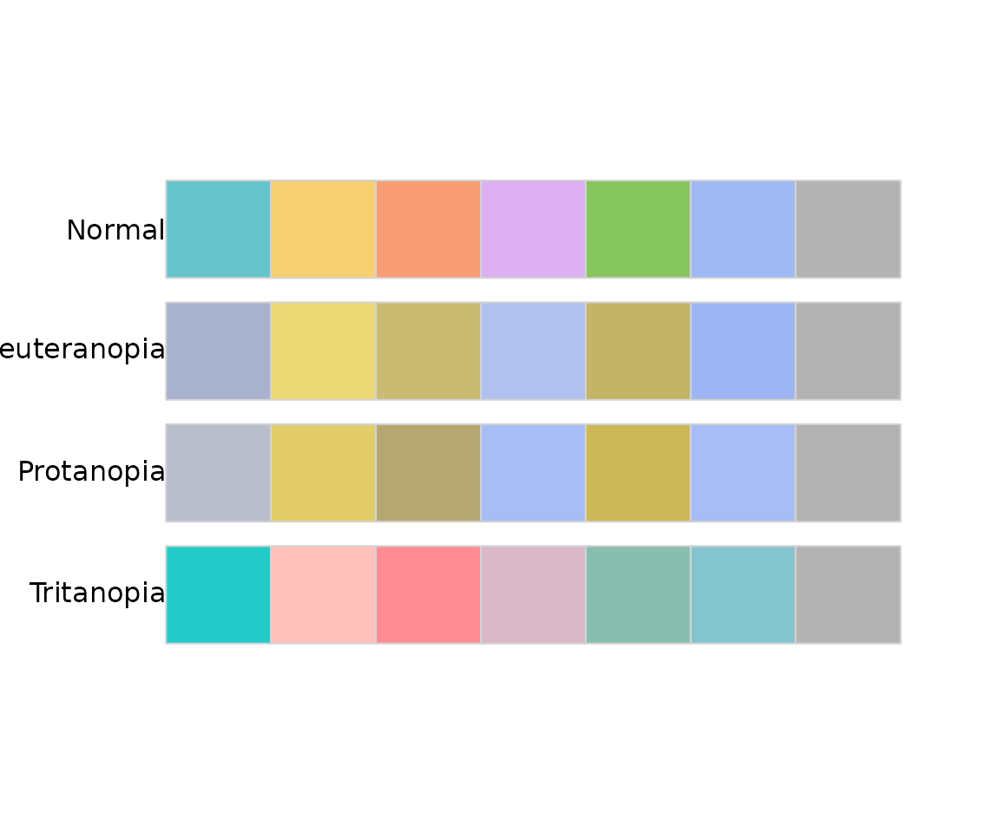
#> name n tolerance ncp ndcp min_dist mean_dist max_dist
#> 1 normal 7 18.11564 21 21 18.115642 33.19801 63.55396
#> 2 deuteranopia 7 18.11564 21 13 2.377127 25.32044 48.77099
#> 3 protanopia 7 18.11564 21 14 0.332895 24.93691 47.03721
#> 4 tritanopia 7 18.11564 21 13 9.922699 28.57479 57.00884
Bold = carto_pal(7, "Bold")
colorblindcheck::palette_check(Bold, plot = TRUE)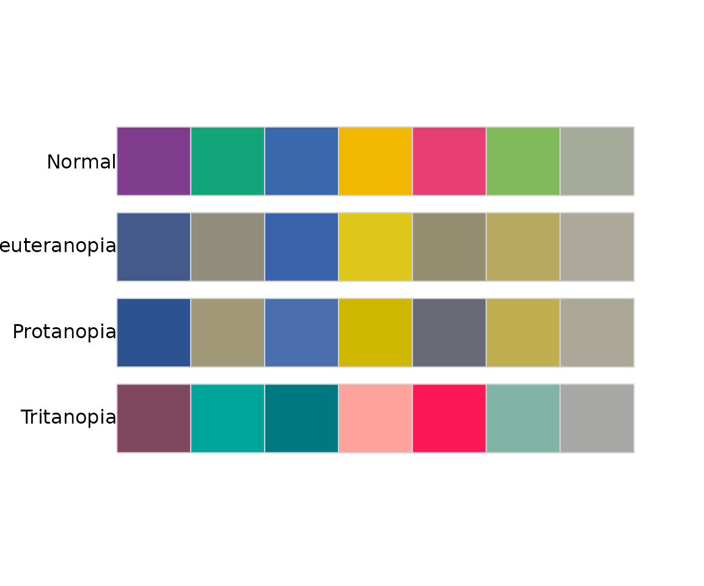
#> name n tolerance ncp ndcp min_dist mean_dist max_dist
#> 1 normal 7 16.72723 21 21 16.727231 44.47418 76.61599
#> 2 deuteranopia 7 16.72723 21 14 4.717364 30.12514 65.77121
#> 3 protanopia 7 16.72723 21 16 7.568855 32.18689 65.93970
#> 4 tritanopia 7 16.72723 21 20 11.373456 38.64371 67.87750
Antique = carto_pal(7, "Antique")
colorblindcheck::palette_check(Antique, plot = TRUE)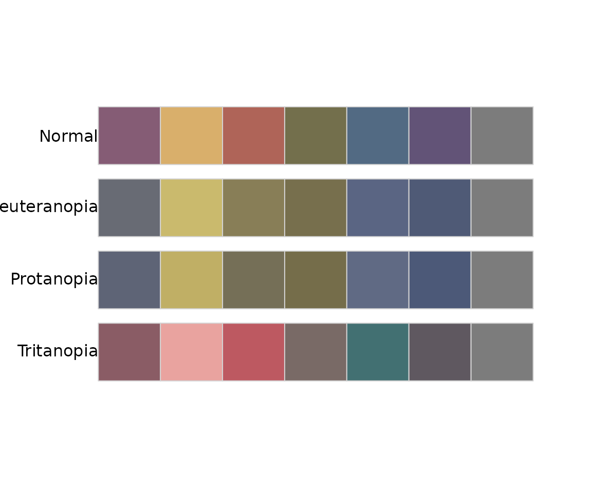
#> name n tolerance ncp ndcp min_dist mean_dist max_dist
#> 1 normal 7 10.70734 21 21 10.707344 27.24781 50.59054
#> 2 deuteranopia 7 10.70734 21 16 4.110076 22.83042 50.26350
#> 3 protanopia 7 10.70734 21 17 3.730907 21.98242 49.36000
#> 4 tritanopia 7 10.70734 21 19 9.505846 23.57850 46.39265
display_carto_all(type = "aggregation")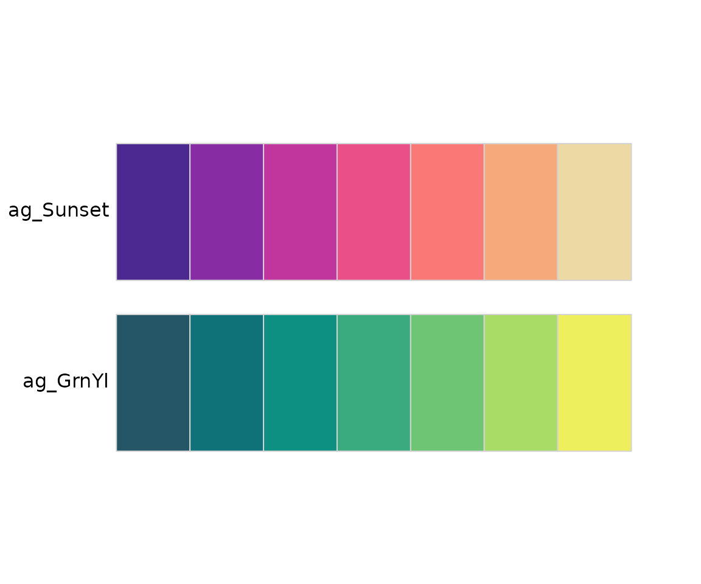
ag_Sunset = carto_pal(7, "ag_Sunset")
colorblindcheck::palette_check(ag_Sunset, plot = TRUE)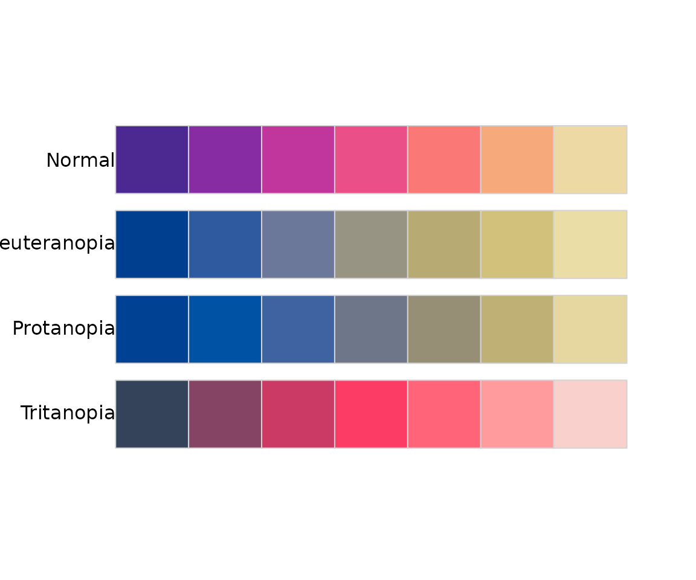
#> name n tolerance ncp ndcp min_dist mean_dist max_dist
#> 1 normal 7 11.29042 21 21 11.290421 37.45088 75.02318
#> 2 deuteranopia 7 11.29042 21 18 6.945054 35.52877 72.37286
#> 3 protanopia 7 11.29042 21 17 5.889912 34.43109 70.43866
#> 4 tritanopia 7 11.29042 21 19 6.125403 28.91659 57.75962
ag_GrnYl = carto_pal(7, "ag_GrnYl")
colorblindcheck::palette_check(ag_GrnYl, plot = TRUE)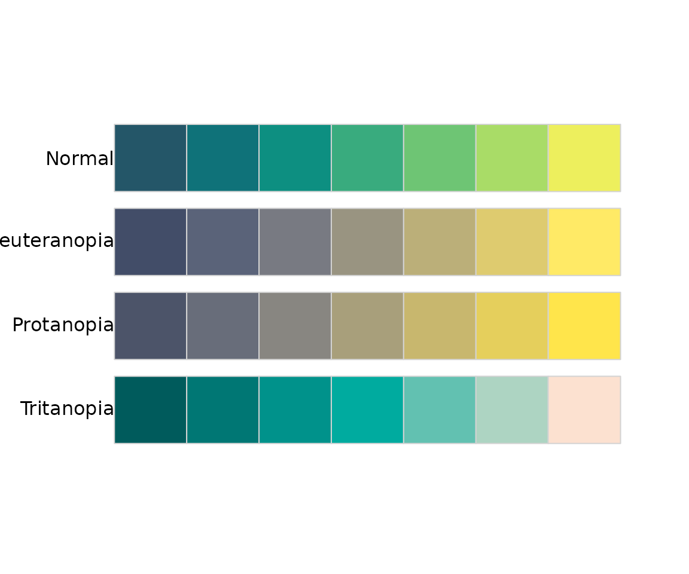
#> name n tolerance ncp ndcp min_dist mean_dist max_dist
#> 1 normal 7 11.29211 21 21 11.292112 31.02678 64.17769
#> 2 deuteranopia 7 11.29211 21 17 8.063681 31.13498 65.95512
#> 3 protanopia 7 11.29211 21 17 6.364113 28.99400 61.68246
#> 4 tritanopia 7 11.29211 21 17 8.017867 26.51521 56.48330